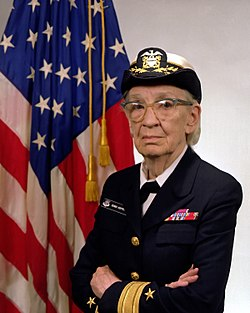

Grace Hopper
Grace Murray Hopper (Nova Iorque, 9 de dezembro de 1906 — Condado de Arlington, 1 de janeiro de 1992) foi almirante e, analista de sistemas da Marinha dos Estados Unidos nas décadas de 1940 e 1950, criadora da linguagem de programação de alto nível Flow-Matic (em desuso) — base para a criação do COBOL — e uma das primeiras programadoras do computador Harvard Mark I[1] em 1944.
Infância e Educação
Grace Murray nasceu na cidade de Nova Iorque, sendo a mais velha de três irmãos. Seus pais, Walter Fletcher Murray e Mary Campbell Van Horne, eram de descendência Escocesa e Holandesa e cursaram o West End Collegiate Church. Seu bisavô, Alexander Wilson Russell, um almirante da Marinha Americana, lutou na Batalha da Baía de Mobile, durante a Guerra de Secessão.[3]
Foi sempre foi uma criança curiosa, um traço que a marcou pela vida. Aos sete anos decidiu descobrir como funcionava um despertador. Desmontou sete despertadores antes que sua mãe percebesse o que estava fazendo - aí Grace foi autorizada a mexer em apenas um despertador.[4]
Grace Hopper foi à Hartridge School em Plainfield, Nova Jersei. Foi inicialmente rejeitada no processo de admissão no Vassar College aos 16 anos (suas notas em latim eram baixas), sendo admitida no ano seguinte. Graduou-se em 1928 como bacharel em Matemática e Física e, em 1930, concluiu seu mestrado na Yale University. Em 1934, também na Yale University, conquistou seu Ph.D. em Matemática sob a orientação de Øystein Ore.[5][6] A dissertação dela "Novos Critérios de Irredutibilidade" foi publicada no mesmo ano.[7] Começou a ensinar Matemática no Vassar em 1931 e foi promovida a professora associada em 1941.
COBOL
Na primavera de 1959, especialistas da industria e do governo juntaram-se em uma conferência que durou dois dias conhecida como a Conference on Data Systems Languages (CODASYL). Hopper foi consultora técnica para a comitê, e muitos dos seus funcionários contribuíram para a curto prazo na comitê que definiu a nova linguagem COBOL (um acrônimo para COmmon Business-Oriented Language). A nova linguagem estendeu a linguagem FLOW-MATIC de Hopper com algumas da equivalente da IBM, o COMTRAN. Ela acreditava que programas deveriam ser escritos na linguagem mais próxima do Inglês (ao invés de código de máquina ou em linguagens próximas de código de máquina, como a Linguagem Assembly) foi capturado na nova linguagem de negócio, e COBOL se tornou a linguagem de negócio mais onipresente até a atualidade.[17] Dentre os membros da comitê que trabalhavam com COBOL foi o ex-aluno Jean E. Sammet[18] da faculdade Mount Holyoke College.
De 1967 até 1977, Hopper trabalhou como diretora do Grupo de Linguagens de Programação da Marinha no Escritório de Planejamento de Sistemas de Informações da Marinha e foi promovida para a posição de capitã em 1973.[19] Ela desenvolveu validação de software para COBOL e o seu compilador como parte do programa de uniformização do COBOL para toda a Marinha.[19]

UNIVAC
Em 1949, Grace Hopper tornou-se empregada da corporação Eckert-Mauchly Computer como matemática sénior e compôs a equipa de desenvolvimento UNIVAC I.[11] Ela também serviu como diretora do UNIVAC de Desenvolvimento Automático de Programação para Remington Rand. O UNIVAC foi o primeiro computador eletrônico de larga escala conhecido a estar no mercado em 1950 e era mais competitivo em processamento de informação do que o Mark I.[12]
Quando Hopper recomendou o desenvolvimento de uma linguagem de programação que usaria palavras inteiramente em Inglês, ela "foi informada rapidamente que [ela] não conseguiria fazer isso porque computadores não entenderiam Inglês". Mesmo assim, ela persistiu. "É muito mais fácil para muitas pessoas escreverem uma declaração em Inglês do que utilizar símbolos," ela explicou. "Então eu decidi que processadores de dados deveriam conseguir escrever seus programas em Inglês, e que computadores traduziram eles para código de máquina".[13]